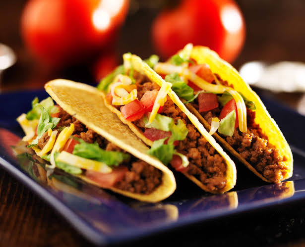

Tacos de Carne Express

Los tacos de carne express son una comida rápida, sabrosa y muy versátil. Con carne bien sazonada y vegetales frescos, podrás preparar un almuerzo o cena completa en apenas 15 minutos.

Los tacos de carne express son una comida rápida, sabrosa y muy versátil. Con carne bien sazonada y vegetales frescos, podrás preparar un almuerzo o cena completa en apenas 15 minutos.